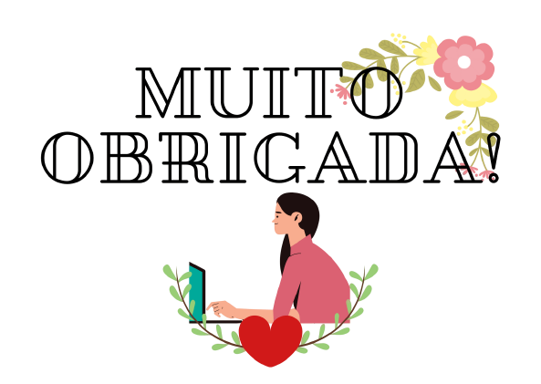

O Enxurrada de Bits foi o curso que me deu estruturas para fazer esse projeto e me mostrou infinitas possibilidades. Sem dúvidas o melhor curso para quem deseja ser um progamador web.
Possui os melhores professores e monitores, inclusive gostaria de agradecer imensamente o Marcus, André, Zeca, Izabela, Tássyla e os outros monitores/professores por se dedicarem
em um curso mais do que especial, com ótimos conteúdos e explicações.
O Enxurrada me possibilitou diversas experiências como o contato com professores e monitores super atenciosos e o meu primeiro contato com programação web.
Sou super grata por fazer parte dessa jornada de aprendizado com essas pessoas maravilhosas.